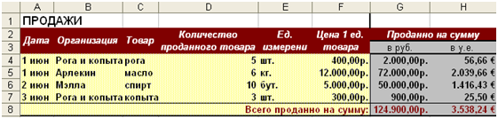
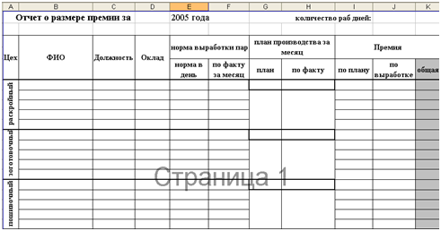
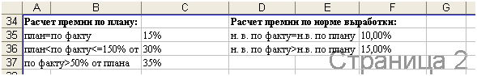
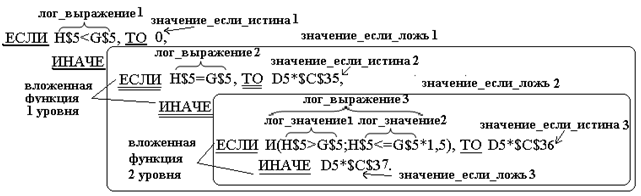
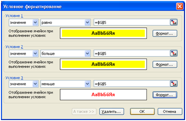

ПРАКТИЧЕСКАЯ РАБОТА №17.
Тема: Простые и сложные вычисления в табличном процессоре MSExcel’2007
Цели работы: Закрепить прежние знания и умения по оформлению таблиц и построению диаграмм в MSExcel’2007. Освоить применение относительной, абсолютной и смешанной ссылок, а также логических функций при вычислениях в MSExcel’2007.
Содержание работы:
- Применение относительной и абсолютной ссылки в простых и сложных вычислениях MS Excel’2007.
- Применение логических функций вычислениях и условного форматирования в MS Excel 2007.
Технология выполнение работы:
Задание 1.
- Откройте новую книгу и скопируйте в нее лист «Продажи» из книги «Работа1_Excel».
- Переименуйте лист – «Сумма_продаж».
- Добавьте новые столбцы: «Продано на сумму, в руб, в у.е.», «курс у.е.». И новую строку: «Всего продано на сумму:».
- Сделайте оформление новых элементов таблицы.
- В ячейку G4 введите формулу для вычисления суммы проданного товара в рублях (количество проданного товара * цену 1 ед. товара): =D4*F4(так как при копировании ссылки должны измениться, то применяем относительную ссылку).
- Скопируйте формулу в ячейки G5:G7, используя Маркер Автозаполнения. Проанализируйте изменение формул в этих ячейках.
- Для ячеек G4:G7 задайте формат данных – денежный, обозначение р.
- В ячейку H4 введите формулу для вычисления суммы проданного товара в у.е. (продано на сумму в руб./курс у.е.). Учитывая, что курс у.е. периодически изменяется, поэтому необходимо ввести такую формулу, чтобы при изменении только одной ячейки - J4 (величина курса), происходил автоматический пересчет данных «продано на сумму в у.е.». Таким образом получается формула: =G4/$J$4 или =D4*F4/$J$4 (так как при копировании первая ссылка должны измениться, то применяем относительную ссылку, а вторая не должна измениться – абсолютную ссылку).
- Скопируйте формулу в ячейки H4:H7, используя Маркер Автозаполнения. Проанализируйте изменение формул в этих ячейках.
- Для ячеек H4: H7 задайте формат данных – денежный, обозначение евро - €.
- В ячейках G8, H8 подсчитать на какую сумму всего продано товара в руб. и в у.е.. Для этого используйте автосуммирование: поставьте курсор в ячейку G8 и нажмите кнопку на панели инструментов: , проверить правильность формулы и нажать Enter.
- Установите соответствующий формат для ячеек G8, H8. Измените цвет для текста в этих ячейках.
- В результате должна получиться примерно таблица, показанная на рисунке: 
- Построить диаграмму, отражающую долю суммы продажи каждого товара в руб. от общей суммы.
- Сохраните книгу в личной папке по именем «Работа3_Excel».
Задание 2. Рассчитать размер премии работникам обувной фабрики «Юничел» за ноябрь 2005года, учитывая, что в этом месяце 26 рабочих дней.
На фабрике три цеха: раскройный, заготовочный, пошивочный. В каждом цехе работает по 10 человек, из них: 1 мастер, 1 помощник мастера, 1 грузчик, остальные сдельщики. Оклад мастера равен 3500 рублей, помощника мастера – 3000 рублей, грущика – 2000 рублей, сдельщиков – 2500 рублей. Кроме того задана норма выработки пар в день для каждого сдельщика = 80 пар в день. Мастер каждого цеха подает данные о норме выработке пар в день каждого сдельщика по факту.
Рассчитать для каждого работника размер премии, учитывая, что премия начисляется всем в зависимости от плана производства, а сдельщикам еще дополнительно в зависимости от выполнения нормы выработки в день.
Этапы решение задачи:
1 этап. Анализ задачи.
Исходные данные: количество рабочих дней, наименование цеха, фамилия, имя, отчество, должность, оклад, норма выработки пар в день, норма выработки пар по факту в месяц.
Требуется рассчитать:
- План производства за месяц по плану = общей норме выработки пар в день по плану всех сдельщиков каждого цеха * на количество рабочих дней в месяце.
- План производства за месяц по факту = общей норме выработки пар за месяц по факту всех сдельщиков каждого цеха.
- Размер премии = размер премии по плану + размер премии по норме выработки, где
- размер премии по плану рассчитывается следующим образом:
- если план производства за месяц по плану = по факту, то премия = 15% от оклада,
-
если план производства за месяц по плану < по факту <=150% от плана, то премия = 30% от оклада,
-
если план производства за месяц по плану > 150% от плана, то премия = 35% от оклада,
- размер премии по норме выработки рассчитывается следующим образом:
- если норма выработки по плану = по факту, то премия = 10% от оклада,
-
если норма выработки по плану > по факту, то премия = 15% от оклада,
- общую сумму премии для каждого работника.
2 этап. Моделирование таблицы.
Оформим таблицу средствами MSExcel’2000/2003. Для этого:
- Перейдите на новый лист и назовите его «Расчет премии».
- Установите параметры страницы: ориентация - страницы Альбомная, верхнее и нижнее поле – 1,5 см, левое и правое – 2 см.
- Оформите заголовок и строку заголовков таблицы. Для всего текста установить тип шрифта TimesNewRoman, для текста 1 строки установить размер шрифта – 14, для строки заголовков размер шрифта – 12, начертание – полужирный, выравнивание по центру, для остального текста размер шрифта – 11, выравнивание по левому краю. А так же задать границу ячейкам.
- Для ячейки D1 установить формат – дата, тип –только название месяца. Ввести в ячейку номер месяца – 11.
- В ячейку J1 ввести количество рабочих дней в ноябре -26.
- Заполнить таблицу исходными данными.
- Выполнить Автоподборширины столбцов и Автоподбор высоты строк.
- Установите вид документа – Разметка страницы (Вид/ Разметка страницы).
- Сделайте просмотр таблицы, нажав кнопку на панели инструментов «Стандартная» . Внесите изменения в таблицу такие, чтобы вся таблица умещалась на одной странице.
- Сохранить изменения.
3 этап. Выполнение расчетов.
Для того чтобы рассчитать премию для каждого работника необходимо выполнить промежуточные расчеты:
- На второй странице рабочего листа «Расчет премии» внести условия расчетов премии. Для ячеек С35, С36, С37, F35, F36 установить процентный формат.
- В ячейке G5 рассчитаем план производства за месяц по плану, используя функцию СУММ: =СУММ(ячейки нормы в день раскройного цеха)*$J$1. Скопируйте формулу в соответствующие ячейки остальных цехов.
- В ячейке H5 рассчитаем план производства за месяц по факту, используя функцию СУММ: =СУММ(ячейки нормы выработки по факту за месяц). Скопируйте формулу в соответствующие ячейки остальных цехов.
- В ячейке I5 рассчитаем размер премии по плану, используя логические функцииЕСЛИ, И, по алгоритму, показанному на рисунке.
H$5 –размер плана производства за месяц,
G$5 - размер плана производства за месяц по факту,
D5 – размер оклада,
$C$35, $C$36, $C$37 – процент премии по плану от оклада.
- Для ввода формулы необходимо:
- вызвать Мастер функции, нажав в Строке формул кнопку или выполнить команду Вставка/Функция,
- выбрать категорию – Логические, функцию – ЕСЛИ,
- в диалоговом окне Аргументы функции заполнить поля, в поле Лог_выражение ввести лог_выражение1, в поле Значение_если_истина ввести значение_если_истина1, в полеЗначение_если_ложь ввести слово - если и нажать Ок.
- в строке формул выделить слово - если и нажать кнопку , в диалоговом окне Аргументы функции заполнить поля в соответствии с алгоритмом для вложенной функции ЕСЛИ 1 уровня,
- аналогично ввести аргументы вложенной функции ЕСЛИ 2 уровня, для которой в поле Значение_если_ложь ввести значение_если_ложь3 и нажать Ок.
В результате в строке формул должна получиться следующая формула: =ЕСЛИ(H$5<G$5;0;ЕСЛИ(H$5=G$5;D5*$C$35;ЕСЛИ(И(H$5>G$5;H$5<=G$5*1,5);D5*$C$36;D5*$C$37))).
Скопируйте формулу в остальные ячейки по раскройному цеху, по заготовочному и пошивочному, изменив адреса ячеек в логических выражениях.
- В ячейке J5 рассчитаем размер премии по норме выработки:
=ЕСЛИ(ИЛИ(F5<E5*$J$1;F5=0);0;ЕСЛИ(F5=E5*$J$1;D5*$F$35;D5*$F$36)). Где
F5 – норма выработки пар по факту в месяц,
E5*$J$1 - норма выработки пар в день*количество рабочих дней,
$F$35, $F$36 - процент премии по выработке от оклада.
Скопируйте формулу в остальные ячейки.
- В ячейке K5 рассчитаем общий размер премии: =СУММ(I5:J5).
- Сохранить изменения.
- Установим для ячеек, в которых рассчитан размер плана производства за месяц по факту, условное форматирование. То есть если размер плана производства за месяц по факту>= размера плана производства за месяц, то ячейку залить, например, желтым цветам и установить начертание шрифта – полужирное, а если размер плана производства за месяц по факту< размера плана производства за месяц, то установить начертание шрифта – полужирное и цвет шрифта, например, красный. Для этого:
- выделить диапазон ячеек H5:H23,
- выполнить команду меню Формат/Условное форматирование, в открывшемся диалоговом окне установить параметры для Условия 1 указанные на рисунке, нажать кнопку А также,
- в дополнительном окне установить параметры для Условия 2указанные на рисунке, нажать кнопку А также, установить параметры для Условия 3, нажать ОК.

- Оцените результат. Измените размеры нормы выработки пар по факту в месяц. Какие произошли изменения?
- Сохранить изменения.